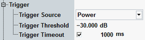

The "Trigger" parameters configure the trigger system for the Bluetooth multi-evaluation measurement.

Selects the source of the trigger event. Some of the trigger sources require additional options.
- "Power":
The measurement is triggered by the rising edge of the measured Bluetooth burst.
This trigger is a recommended trigger in the standalone scenario. - "…External…":
External trigger signal fed in via the rear panel of the instrument. - Additional trigger modes:
Other firmware applications, e.g. the "Bluetooth Signaling" application (option R&S CMW-KS61x) or the GPRF generator, provide additional trigger modes. Refer to the documentation of the corresponding firmware application for a description of these trigger modes.
This parameter is only visible in the standalone (SA) scenario. In the combined signal path (CSP) scenario, it is controlled by the signaling application. See also "Parallel Signaling and Measurement".
Remote command:Defines the input signal power where the trigger condition is satisfied and a trigger event is generated. The trigger threshold is valid for power trigger sources. It is a dB value, relative to the reference level minus the external attenuation ("<Ref. Level> – <External Attenuation (Input)> – <Frequency Dependent External Attenuation>").
- The reference level is set to the actual maximum output power of the EUT and
- The external attenuation settings are in accordance with the test setup.
A low threshold can be required to ensure that the R&S CMW always detects the input signal. A higher threshold prevents unintended trigger events.
Sets a time after which an initiated measurement must have received a trigger event. If no trigger event is received, a trigger timeout is indicated in manual operation mode. In remote control mode, the measurement is automatically stopped.
Remote command: